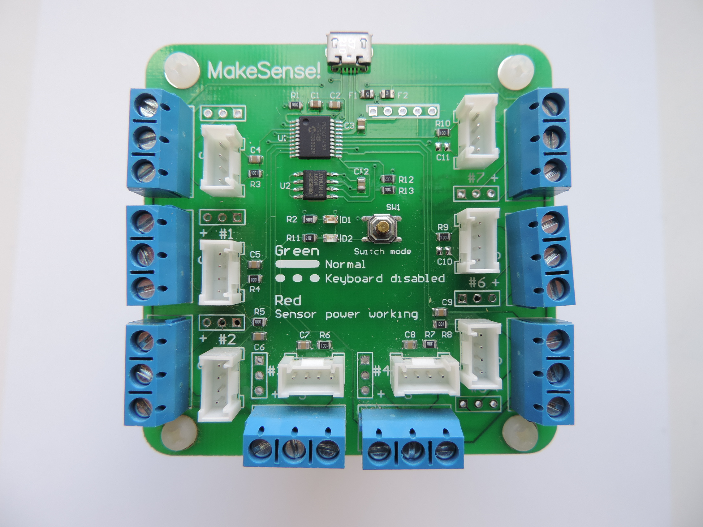

Make!Sense Board
Unlike any other board on the market, the Make!Sense
board gives teachers the ability to teach kids about
the wonders of engineering, while keeping it simple
enough for kids to understand.
By plugging in various types of sensors into any of
the eight available ports on the Make!Sense board,
students can learn to manipulate data coming from
those sensors on the computer.
The Make!Sense board is a small and simple tool that
gives students access to a world that is much bigger,
a world that is only limited by one's imagination and
creativity, the world of making.
How Does it Work?
The Make!Sense board has eight connections ports. This means
that any amount from zero to eight sensors can be plugged
into it to feed data into a computer. It does this by
acting like a keyboard and outputting keystrokes. These
keystrokes can be configured using the MakeSense
Configurator, which is shown on the right.
Because the Make!Sense board outputs keystrokes, it can be
used to send data to a wide variety of programs. One
examples is Scratch by MIT. Scratch, a program designed
for teaching young students about the wonders of computer
programming, works very well with the Make!Sense board,
because Scratch uses key strokes as input for its programs.
To see some example programs and experiments for the
Make!Sense board, click the button below:
Sensors
The Make!Sense board is used to input information from
the outside world into the computer. This allows programs
to respond to external stimuli, making them smarter and
more useful. There are many different types of sensors, but
there are two main categories: digital and analog.
| Digital |
Sensors that output digital signals can output
one of two values, HIGH or LOW. HIGH means ON, and
LOW means OFF. Examples of sensors that output digital
signals are buttons, switches, and touch sensors. |
|
| Analog |
Sensors that output analog signals can output
any value from 0 to 1023. 0 in analog is equal to LOW
in digital. 1023 is equal to HIGH in digital. Examples
of sensors that output analog signals are potentiometers,
photoresistors, and temperature sensors. |